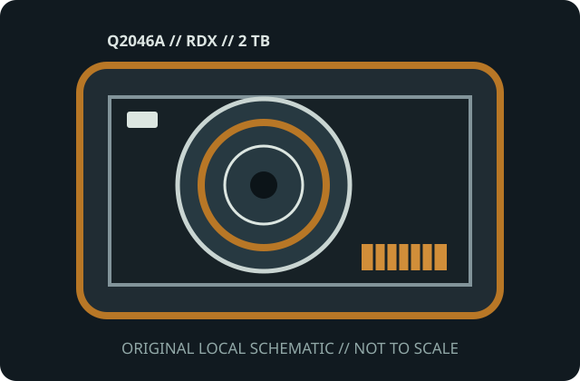

[ MODEL-SPECIFIC MEDIA // PRODUCT RECORD ]
HPE RDX 2 TB Removable Disk Cartridge (Q2046A)
This entry identifies the removable medium SKU, not its drive or dock. Confirm the exact model label, medium generation, host format and drive/dock compatibility before use.

IDENTIFICATION: HPE manufacturer SKU Q2046A; RDX removable disk cartridge with 2 TB 2.5-inch magnetic hard disk. Native capacity is distinguished from any data-dependent compression estimate.
Capacity, physical format and compatibility
| Manufacturer / SKU | HPE Q2046A |
|---|---|
| Medium / generation | RDX removable disk cartridge with 2 TB 2.5-inch magnetic hard disk; HPE RDX cartridge SKU Q2046A, 2 TB generation; removable hard disk within a rugged carrier. |
| Native capacity | 2 TB nominal; usable formatted capacity varies with filesystem, partitions and system overhead. |
| Drive/dock compatibility | HPE RDX dock explicitly qualified for Q2046A 2 TB media, or another RDX dock with a published 2 TB/OS compatibility listing. Requires a 2 TB-capable RDX docking station and supported host driver/OS. RDX media from different suppliers are designed for common docks, but validate exact cartridge capacity and dock firmware before use. |
| Physical medium | Rugged sealed shell with internal 2.5-inch hard disk, protective rails and keyed electrical dock connector; disk platter is not directly accessible. |
| Electrical interface | Dock-mated internal SATA-class disk interface; no direct USB/data cable or power connector on cartridge. External USB/SATA connection is supplied by dock hardware. |
| Format limits | 2 TB label is nominal disk capacity; formatted space and performance are host- and filesystem-dependent. RDX is random-access removable disk and is not compatible with tape drives or ordinary bare 2.5-inch bays. |
Storage and preservation cautions
Keep in case and avoid drops, impacts, vibration during access, dust, moisture, excessive heat and magnetic fields. Safely eject, validate checksums, keep multiple backups and periodically test restore/reader operation.
- Do not force media into a drive/dock or use improvised cleaners, lubricants or repairs. Stop if the shell, connector, tape leader or disk enclosure is damaged.
- Preserve more than one independent copy, verify checksums after transfer, and document the drive/dock, firmware, OS and format used. Plan migration before compatible equipment is lost.
Manufacturer and archival sources
- HPE — RDX Removable Disk Cartridge QuickSpecsManufacturer technical specifications for capacity variants, docks and compatibility.
- Quantum RDX technical datasheet (archival copy)Format vendor overview for RDX cartridge/dock interoperability.
- Library of Congress — Care, Handling, and Storage of Audiovisual MaterialsArchival recommendations for clean, stable media handling.
Capacity labels, compressed ratings, and compatibility are model- and host-specific. Product references and exact drive/dock manuals take precedence over shell fit or a generic family name.